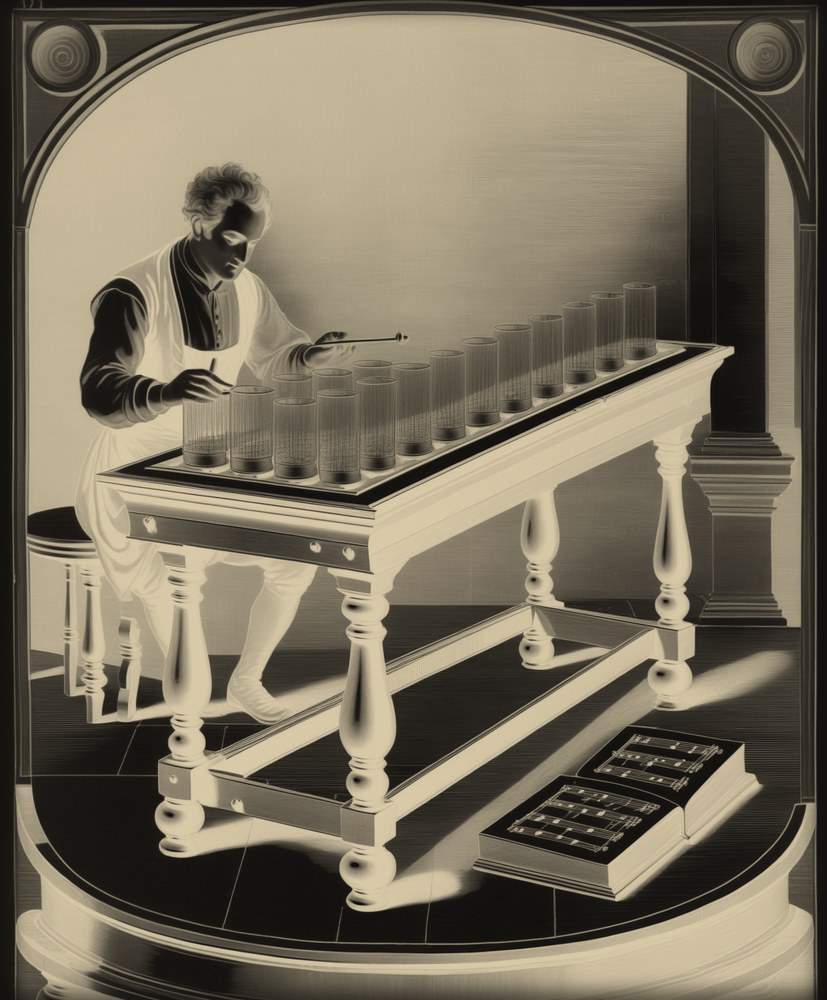
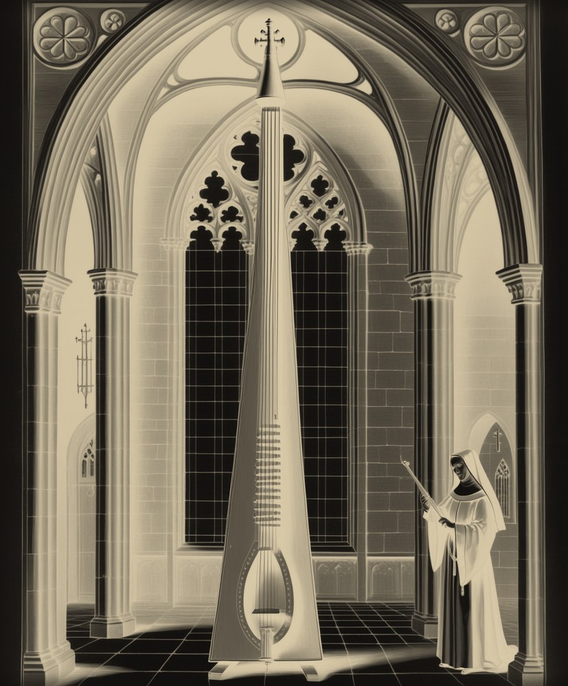
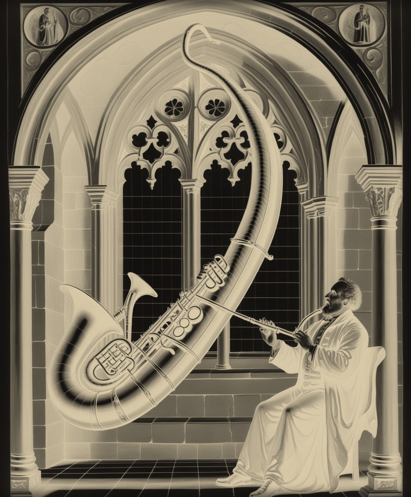
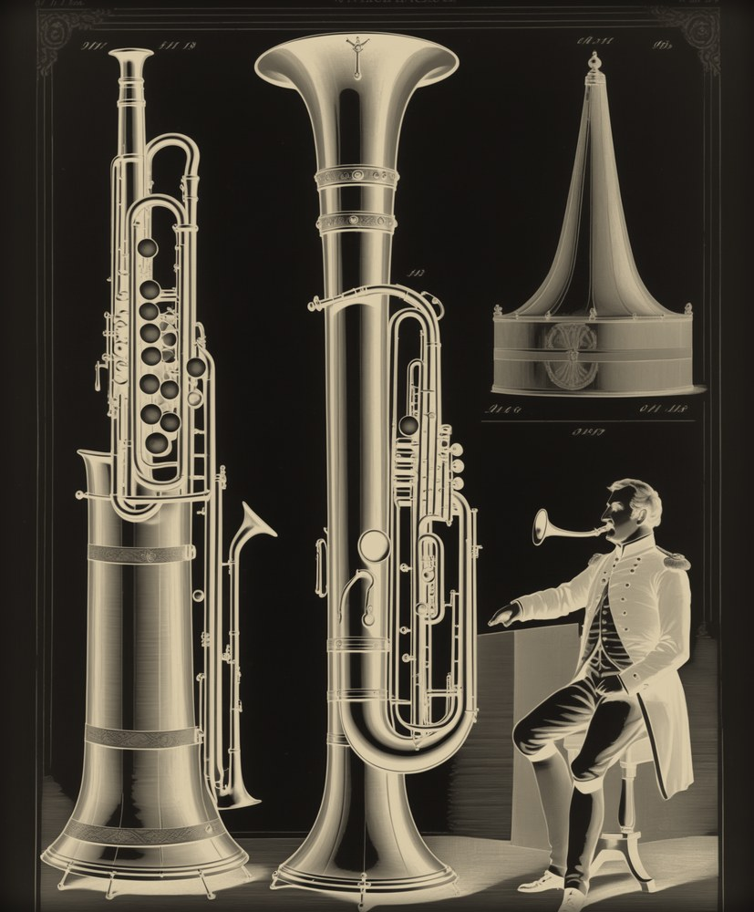
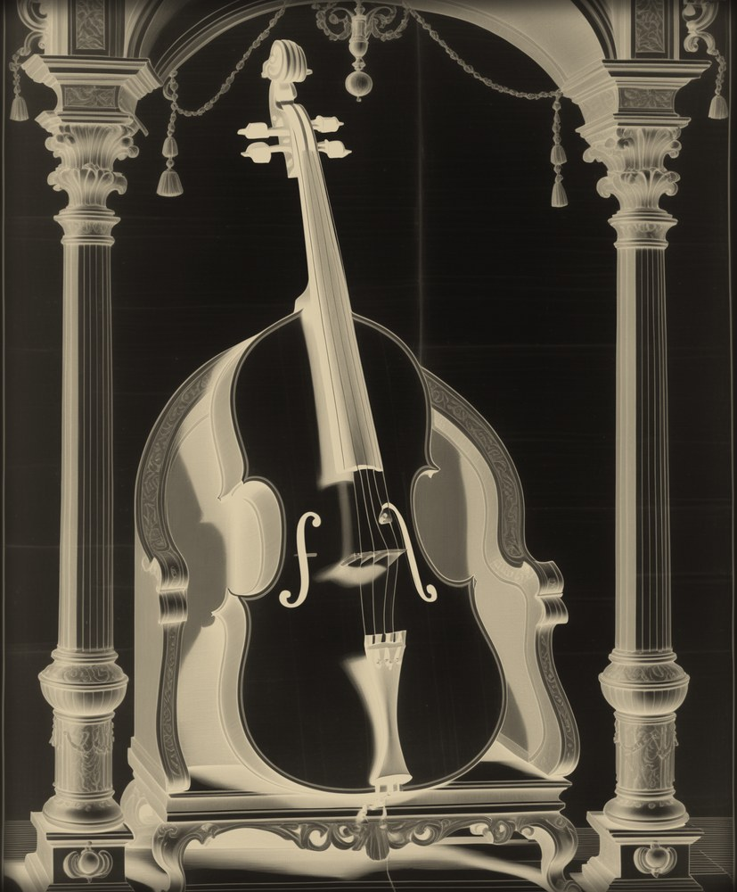

Benjamin Franklin's spinning glass bowls, played with wet fingers. Its sourceless tone was blamed for melancholy, madness and the deaths of its players; Mesmer played one over his séance patients. Too quiet for the new concert halls, it faded within a lifetime.
model: stick-slip friction driving a split-doublet modal bank — the slow beat you hear is two glass modes 0.2% apart

Two meters tall, one string, played only in natural harmonics — and a bridge with one foot left deliberately loose, hammering the soundboard so a bowed string snarls like a trumpet. Convents kept it alive for centuries: women were forbidden real trumpets, so nuns bowed this instead. Its last virtuoso wrote its final treatise in 1742.
model: bowed waveguide with a flageolet junction and a colliding bridge foot; the wrong-sounding 7th harmonic is physics, not a bug

Eight feet of leather-wrapped wood folded into an S, six finger holes placed for hands rather than acoustics. It carried French plainchant for 250 years. Berlioz wrote that its tone would be "better suited for the bloody cult of the Druids."
model: one-mass lip valve against six weak, misaligned bore resonances — in the low register the lips decide the pitch, as on the real thing

The "keyed serpent," born in Paris and dead within one human lifetime, killed by the valved tuba. Mendelssohn scored it in the Midsummer Night's Dream overture. Its last great player, Sam Hughes, died poor on April Fools' Day 1898.
model: the same lip valve against eight stronger, truer resonances — brighter, rawer, closer to speaking

A viol bowed in front while the left thumb plucks wire strings behind the neck — ten of them tuned to D major, shimmering in sympathy with everything. It existed because one prince played it; Haydn, formally reprimanded for neglecting it, wrote it 175 works. When the prince died, so did the instrument.
model: bowed waveguide plus ten Karplus wire strings fed from the bridge — the D-major halo is why this piece is in D
The armonica summons. The tromba marina climbs its harmonic ladder, including the seventh harmonic that equal temperament calls wrong. The serpent chants, the ophicleide answers. The baryton dances a small sarabande for an audience of one prince. Then, for the first and only time, all five play together: a passacaglia on a falling ground, D–C–B–A, louder and stranger until the candle goes out — and the glass is left ringing alone.
Every note is a physical simulation running at 48 kHz: Helmholtz stick-slip friction for the bows and the wet finger on glass, a one-mass lip valve breathing into modal bores for the brass, a mass-spring bridge foot colliding with the soundboard for the tromba's snarl. No samples, no synths, no recordings. The instruments were tuned the way players and makers tune them: by measuring what came out and adjusting embouchure, bow force and bore until each note landed.
"Extinct" means extinct from common use: modern reconstructions of all five exist, and period orchestras still field serpents and ophicleides for Berlioz. No living tradition carried any of them forward, but they are not unheard — just unheard together, and never like this.
These models are caricatures drawn from published acoustics, not replicas of surviving museum instruments. I cannot hear; the piece was judged through spectrograms, pitch trackers and loudness meters, and a gate that proves all 285 scored notes sound in the final master. Whether it is beautiful is your call, not mine.